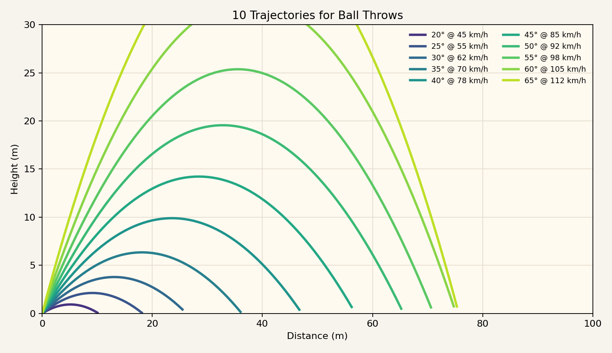
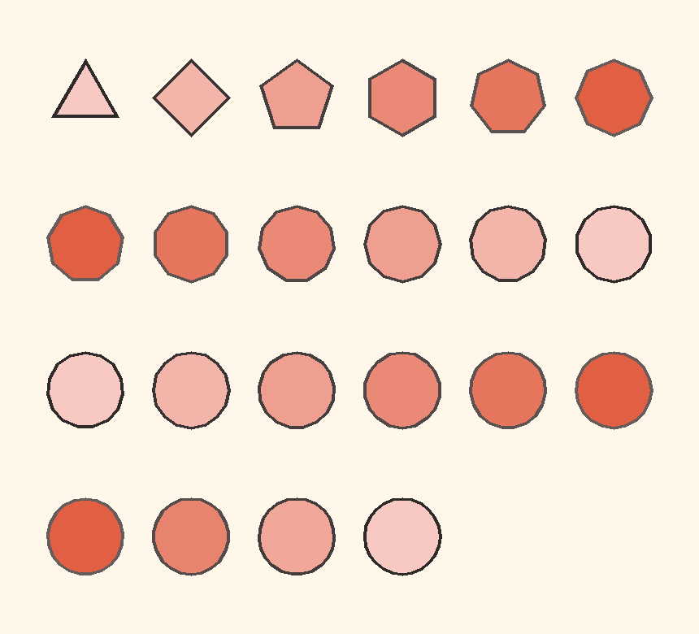
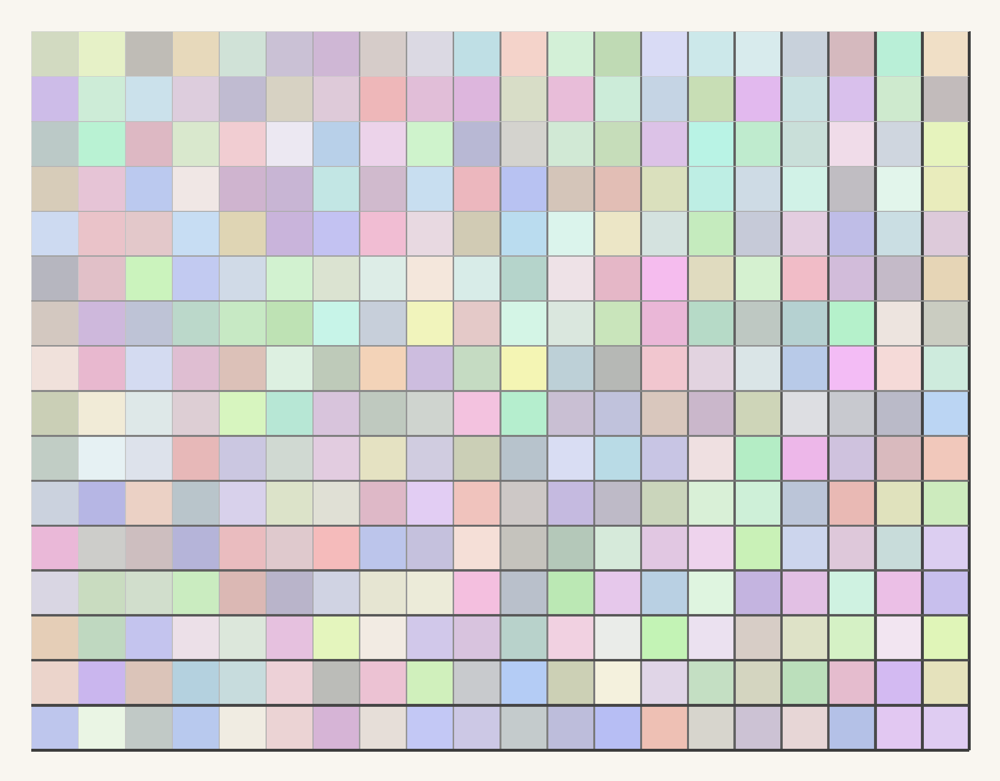

digit-examples
Small Python mini-projects for drawing, plotting, and experimenting. Each folder is self-contained and can be opened in a browser or run from the command line.

Ball Throw Trajectories
A Matplotlib example that draws ten projectile paths with different launch angles and speeds.

Polygon Row Patterns
A PIL drawing exercise with regular polygons, generated color gradients, and rows of shapes.

Grid Lines
A PIL grid generator using pastel cell colors and lines that gradually become darker and thicker.